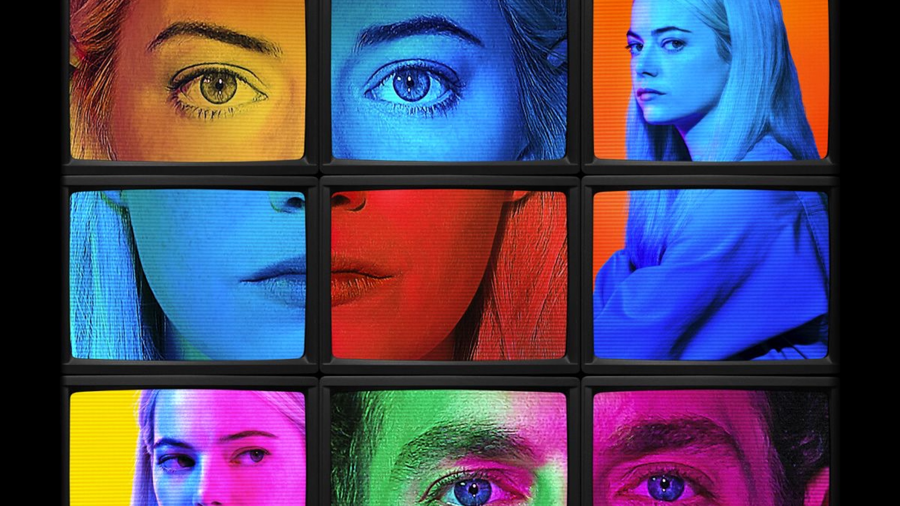
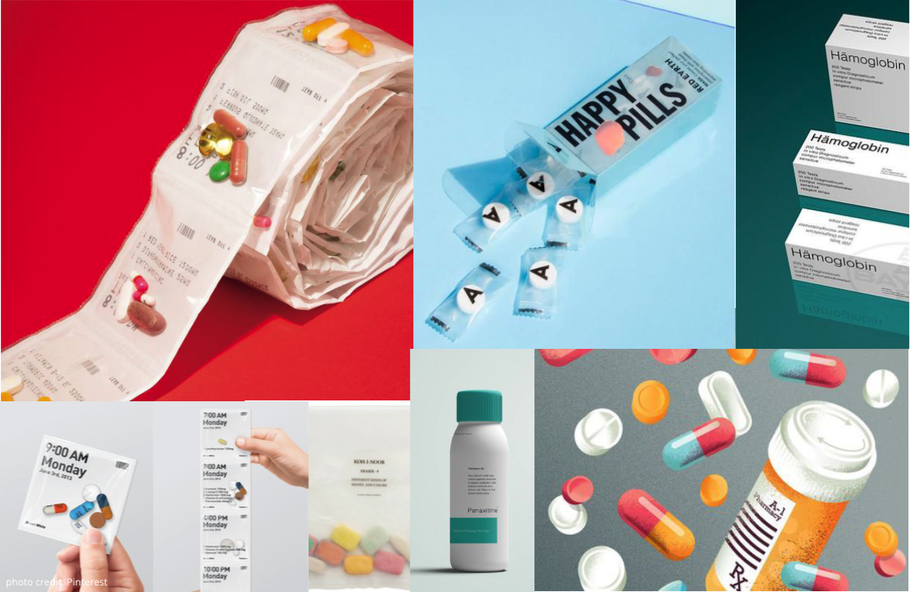
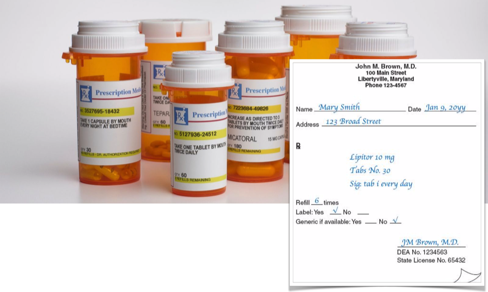

It’s FINE BEER is inspired by the Netflix Original Miniseries, MANIAC.
Manic is set in a world somewhat like our world, in a time quite similar to our time, Maniac tells the stories of Annie Landsberg (Emma Stone) and Owen Milgrim (Jonah Hill), two strangers drawn to the late stages of a mysterious pharmaceutical trial, each for their own reasons. Annie's disaffected and aimless, fixated on broken relationships with her mother and her sister; Owen, the fifth son of wealthy New York industrialists, has struggled his whole life with a disputed diagnosis of schizophrenia. Neither of their lives have turned out quite right, and the promise of a new, radical kind of pharmaceutical treatment -- a sequence of pills its inventor, Dr. James K. Mantleray (Justin Theroux), claims can repair anything about the mind, be it mental illness or heartbreak -- draws them and ten other strangers to the facilities of Neberdine Pharmaceutical and Biotech for a three-day drug trial that will, they're assured, with no complications or side-effects whatsoever, solve all of their problems, permanently. Things do not go as planned. - Rotten Tomatoes

Movie Poster of "Maniac"
We are all fond of miracle cures. Growing up surrounded by advanced technology, millennials live in a world without impossibility. We too often tell each other that you are free to be whoever you want and do whatever you like. This sentence seems simple and the point appears to be obvious, but it’s also difficult to grasp and accomplish. Self-exploration is somehow, absurdly, one of the major tasks of our generation, and knowing who you are is of the utmost importance. When we flatter people who claim to have “found their true selves,” we often elide people who are suffering and struggling. Abraham Riesman stated in his article “Let’s Talk About the Ending of Maniac,” that “Maniac” is against arrogance — the arrogance of thinking we can always fix things and do well.
From that point of view, It’s FINE beer aims to serve up happiness in this excessive, overwhelming world.

Mood board
The brand will deliver the message that It’s FINE BEER can get you out of your funk wherever you are. The target is Millennials between 25-35 years old, who are at stages of transformation in their lives. The tone of the brand will be fun, clinical, ridiculous, sarcastic and satirical.
Logo Development
Connecting with the powerful pills in “Maniac” that claimed to have the ability to cure all mental illness, I derived four colors that are regularly used for medicines and put them in four circles to create the image of “FINE pills,” the pills that have magical cures. The typeface design of the F-I-N-E was mimicking electric currents to present the state of “the thinking brain” which create an expectation that having this (pill or beer) can turn you on or turn you off.
Label Type Development
Keeping with the spirit of the logo, I wanted to design the label based on at medical prescription along with a satirical and ridiculous tone.
